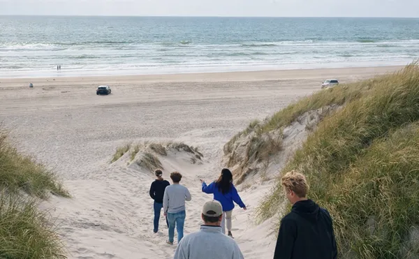
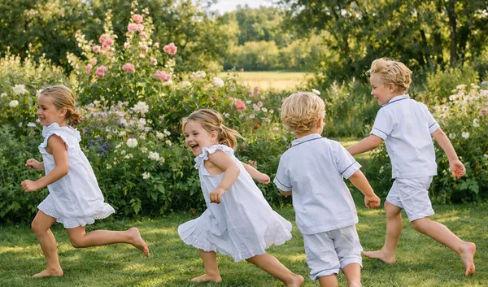
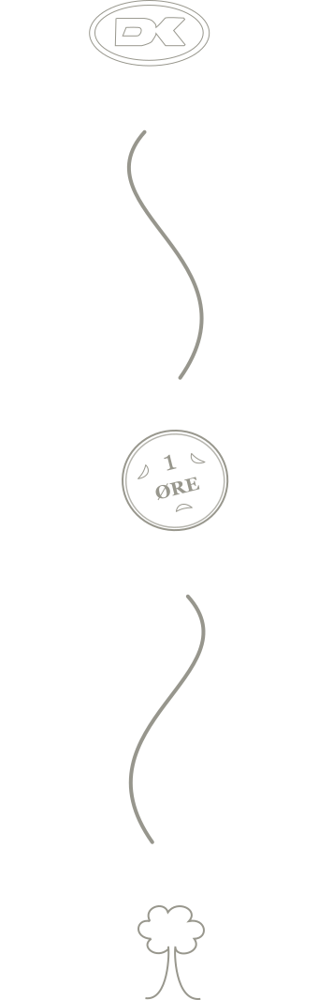
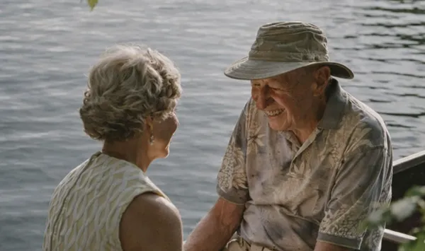

Følelsen af at gøre en forskel
Selvom bidragene er små, er du med til at skabe en reel forandring sammen med mange andre. Det giver en konkret følelse af, at dine daglige handlinger er med til at støtte noget større.
“Hvad hvis din kaffe
kunne hjælpe naturen?”

Selvom bidragene er små, er du med til at skabe en reel forandring sammen med mange andre. Det giver en konkret følelse af, at dine daglige handlinger er med til at støtte noget større.


Når du støtter naturprojekter, er du med til at skabe og bevare områder, hvor flere mennesker kan og du kan opleve naturen tæt på i hverdagen. Det giver dig mulighed for ro, fordybelse og stærkere forbindelse til naturen omkring os

Du bliver en del af et fællesskab, hvor mange bidrager lidt hver dag. Sammen skaber vi en samlet indsats, der gør det muligt at støtte vigtige projekter og skabe positiv forandring i samfundet.
Du kan følge med i, hvad dine bidrag går til, og hvordan de er med til at gøre en forskel. Det er en enkel måde at være med til at skabe positiv forandring, lidt ad gangen.